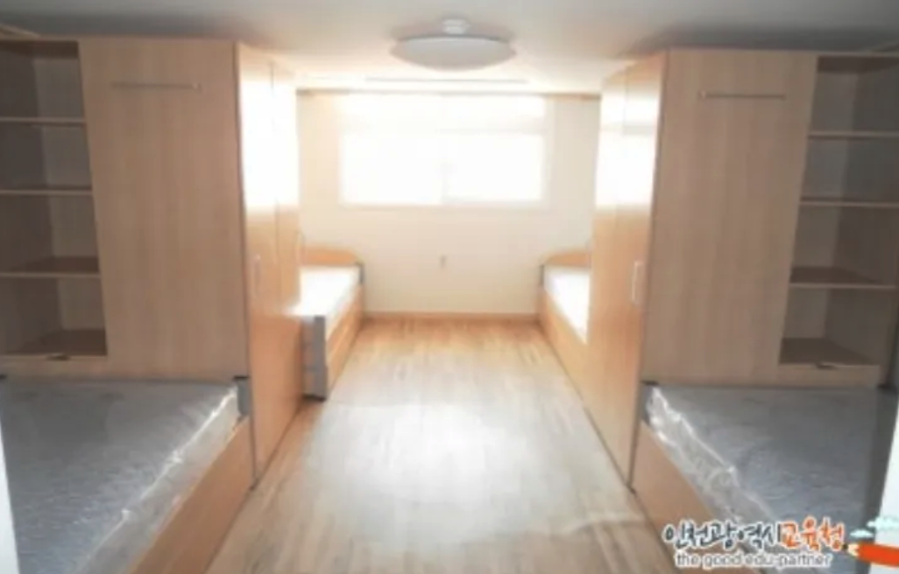
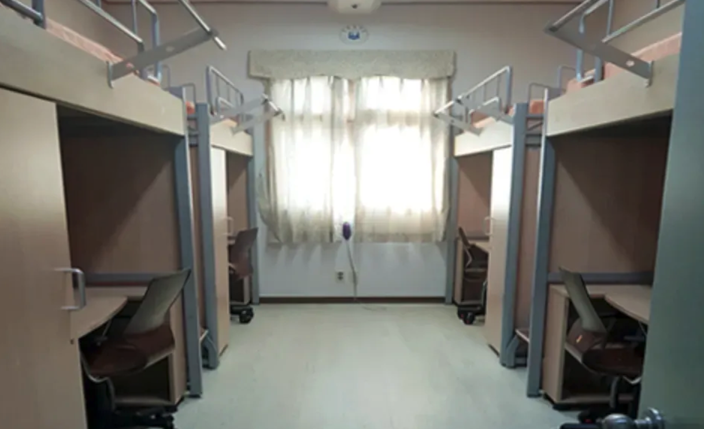

공간이전 기숙사 기획안
개요
- 기존 기숙사의 공간에 있어서의 문제점 해결과 이전되는 기숙사 거주자의 편리함과 실용성을 극대화하면서, 제한된 공간에서도 최적의 수납과 생활 환경을 조성하는 공간을 제안함
배경
- 작은 공간에서 많은 물품을 수납하고, 생활 필수 기능을 충족하기 위한 방안이 필요함
- 기존 라운지 이동의 불편함과 더불어 다양한 물품의 수납 요구가 있으며, 쾌적한 주거 환경을 위해 에어컨, 난방, 커튼, 블라인드 등 추가적인 구성 요소가 필요함
목적
- 주거공간을 효율적으로 개선하여 생활 편의성을 높임
- 공간을 최대한 활용하여 쾌적한 환경을 유지, 필요한 물품을 효율적으로 보관함
- 계절별 생활 환경(여름, 겨울)에 맞는 난방 및 냉방 시스템을 갖추고, 사생활 보호(개인공간)를 강화
제안사항
1. 공간구성
- 수납공간: 작은 공간에서도 많은 물품을 정리할 수 있도록 충분한 수납공간을 마련함
- 벙커형 침대+책상 일체형 : 1층은 책상과 수납공간, 2층은 침대로 구성된 벙커형 침대를 설치하여 공간 활용도를 높임
- 옷장/행거 및 커튼: 옷장과 행거를 마련하고 커튼을 설치하여 옷 보관 및 공간 분리함
- 조명: 무드등or 부착형 스탠드를 설치해 편안한 환경을 조성함
- 화장실: 공간 내에 간편하고 샤워가 가능한 화장실을 마련해 생활 편의성을 증대함
- 에어컨 및 난방: 여름과 겨울에 적합한 냉난방 시스템을 설치하여 온도 조절이 용이하도록 함
- 멀티탭 및 커튼: 전자기기 사용을 위한 멀티탭과 공간 분리를 위한 커튼을 준비함
- 건조대: 건조기 사용이 어려운 옷들을 위한 작은 건조대를 배치함
- 유리블라인드: 침대가 입구와 가까운 경우를 위해 현관과의 공간 분리를 위한 유리블라인드를 설치함
2. 구조 형태
- 정사각형 공간: 기본 옷장, 행거, 커튼, 벙커형 침대, 화장실, 블라인드를 배치함
- 직사각형 공간: 기본 구성에 창문을 추가하여 환기 및 채광을 보강함
기대사항
- 공간을 효율적으로 사용하여 필요한 물품을 수납하고, 생활 편의성을 향상시킴
- 각종 필수 기능(냉난방, 수납, 사생활 보호 등)을 갖춘 쾌적한 주거환경이 조성됨
- 계절과 상관없이 안정적인 생활이 가능해짐
우려되는 점
- 공간이 한정적이어서 수납공간이 부족해질 수 있음
- 벙커형 침대의 설치로 인해 공간이 좁아 보일 수 있음
- 수납이나 물품 배치 시 동선이 복잡해질 가능성이 있음
조치사항
- 필수 물품을 우선적으로 수납하고, 불필요한 물품은 최소화하여 공간을 절약함
- 공간 활용도를 고려한 물품 배치를 통해 동선을 최대한 확보하고, 효율적인 배치 방안을 정함
- 벙커형 침대와 책상을 일체형으로 설치하여 여유 공간을 확보하고, 꼭 필요한 경우에만 추가 수납 가구를 배치함
참고 사항
- 진산과학고 같은 기숙사가 거캠에 적합 (기숙사 구조 → 개인공간 확보)

- 인하대 기숙사 (침대 형태 → 2층침대, 아래 책상 )

- 1층 책상, 2층에 침대를 배치하여 업무와 취침 공간 분리 가능 (↔2층 침대의 번거로움 다수 존재)